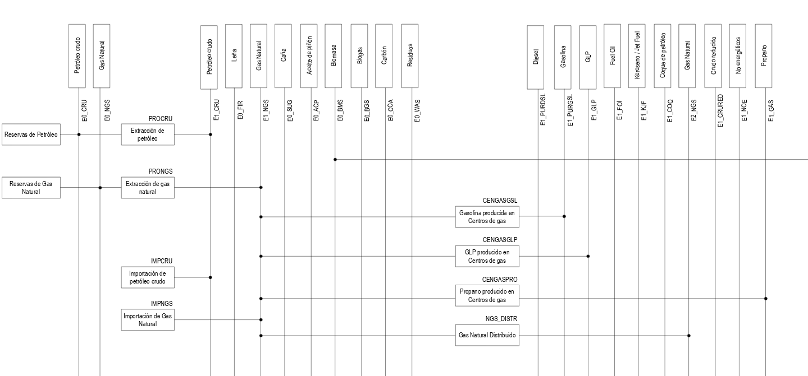

5.1. Estructura del modelo
El sector Procesos Industriales comprende las emisiones de GEI generadas por transformaciones químicas y físicas de materias primas en la fabricación y producción de bienes y en su uso. Es pertinente indicar, que el uso de combustibles como fuente de energía en estos procesos de transformación, se declaran en el sector de energía. En el país, dentro del sector Procesos Industriales se identifican actividades como como la producción de cemento, de cal, de acero, de cerámica, de vidrio, y el uso de solventes, lubricantes, así como el de compuestos de hidrofluorocarbonos (HFC), perfluorocarbonos (PFC), principalmente en sistemas de refrigeración y aire acondicionado.
Es pertinente notar que el presente modelo no corresponde únicamente al modelo OSeMOSYS que da soporte al Plan de Mitigación de cambio climático (PLANMICC), sino que integra información actualizada del modelo OSeMOSYS utilizado para estructurar la segunda NDC.
En particular:
Del modelo OSeMOSYS que da soporte al PLANMICC se toman las estructuras base de tecnologías, factores de emisión y datos históricos.
Del modelo OSeMOSYS utilizado para estructurar la segunda NDC se toman datos de actividad, factores de emisión actualizados con información de la Quinta Comunicación Nacional y Segundo Informe Bienal de Transparencia (5CN2BTR)
Representación Gráfica del Modelo
El modelo del sector Procesos Industriales y Uso de Productos (IPPU) fue estructurado a partir de la base desarrollada en OSeMOSYS, utilizada como soporte analítico del Plan Nacional de Mitigación del Cambio Climático (PLANMICC) (Proyecto CZZ 2739). Sobre esta base se integró la información de la Segunda Contribución Determinada a Nivel Nacional (NDC), complementada con insumos provenientes del PLANMICC. La estructura del modelo incorpora la representación de actividades sectoriales, parámetros tecnológicos y factores de emisión, lo que permite estimar la evolución de las emisiones de GEI del sector bajo distintos supuestos de actividad y medidas de mitigación. De forma esquemática, el Sistema de Referencia de Fuentes (Reference Source System, RSS) del sector se presenta en la Figura 5.1.

Figura 5.1 Estructura base del Modelo de Procesos Industriales.
En la Tabla 5.1, Tabla 5.2 y Tabla 5.3 se incluye la nomenclatura de los Sets, Technologies, Commodities y Emission del modelo de la Figura 5.1.
Código |
Detalle |
|---|---|
ENE_TERM |
Energía térmica para Clinker |
RAW_MAT_CLK |
Materiales para Clinker |
ELEC_TERM |
Electricidad para energía térmica |
ELEC_CEM |
Electricidad para cemento |
RAW_MAT_CEM |
Materiales para cemento |
REST_PI |
Resto de emisiones del sector PIUP |
PROD_CLK_TRAD |
Producción de Clinker con combustibles de origen fósil |
PROD_CLK_ELEC |
Producción de Clinker con electricidad |
PROD_CEM |
Producción de cemento |
HFC_use |
Uso de HFC |
LIME_PROD |
Producción de Cal |
Código |
Producción de Vidrio |
ENE_TERM |
Producción de Cerámica |
RAW_MAT_CLK |
Otros usos de Soda Ash |
ELEC_TERM |
Producción de Hierro y Acero |
ELEC_CEM |
Producción de Plomo |
RAW_MAT_CEM |
Uso de Lubricantes |
REST_PI |
Uso de Ceras de parafina |
Código |
Detalle |
|---|---|
ENE_TERM |
Energía térmica para Clinker |
RAW_MAT_CLK |
Materiales para Clinker |
ELEC_TERM |
Electricidad para energía térmica |
ELEC_CEM |
Electricidad para Cemento |
RAW_MAT_CEM |
Materiales para Cemento |
CLK_PROD |
Clinker para cemento |
CEM_PROD |
Producción de cemento |
Código |
Detalle |
|---|---|
CO2eq_HFC |
Dióxido de carbono equivalente producido por Hidrofluorocarbonos |
CO2eq _CEM |
Dióxido de carbono equivalente producido por el proceso de producción de cemento |
CO2eq _IPPU |
Dióxido de carbono equivalente producido por otros Procesos Industriales y Uso de Productos |